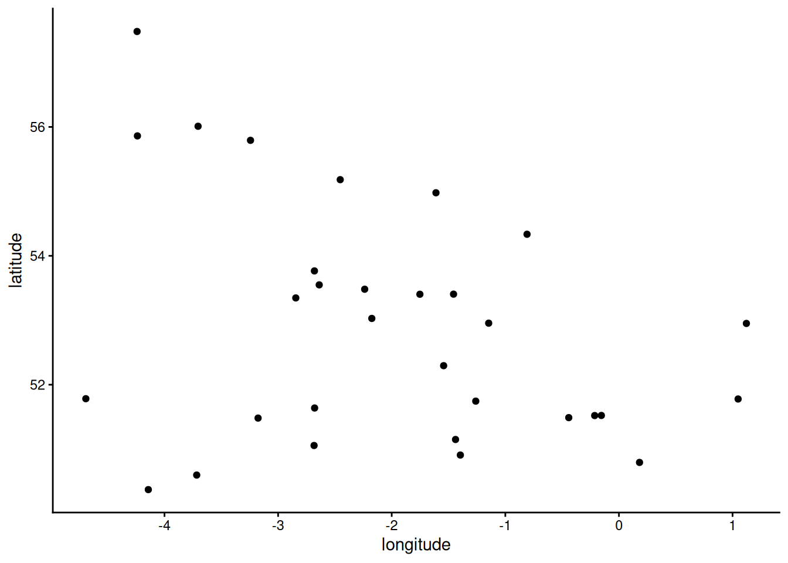
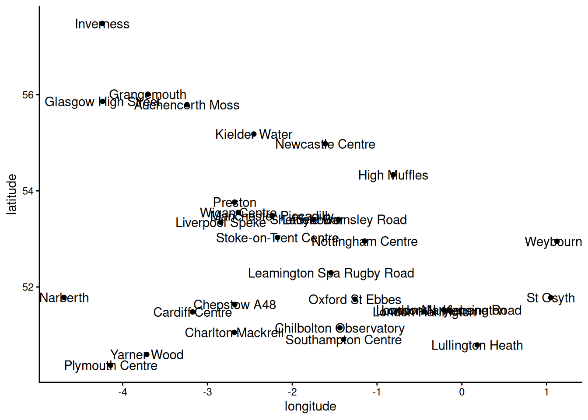
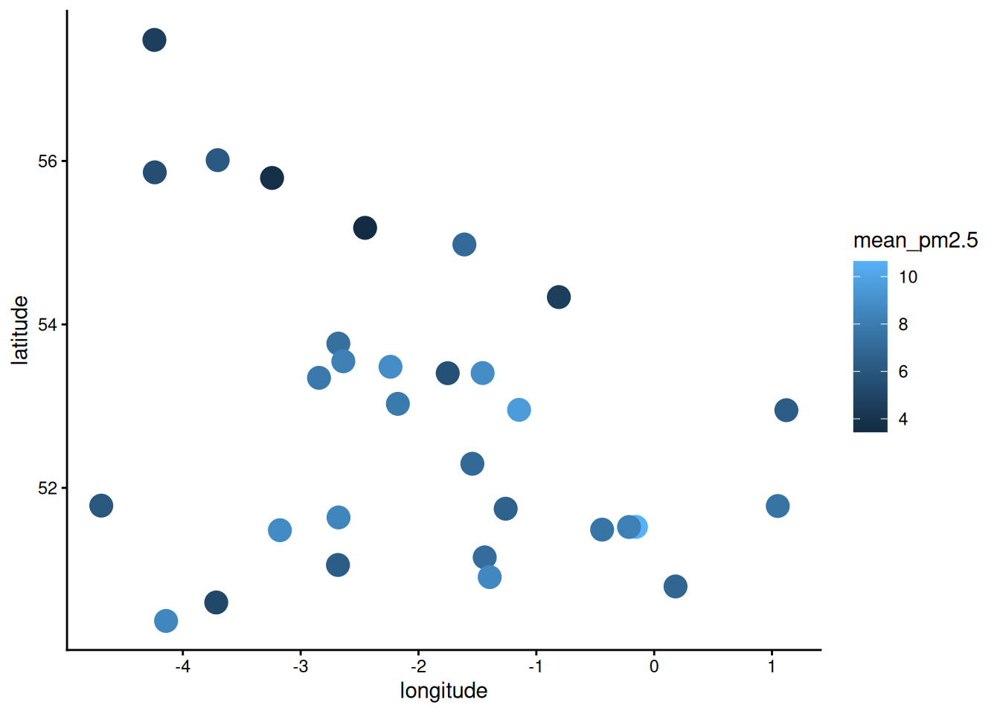
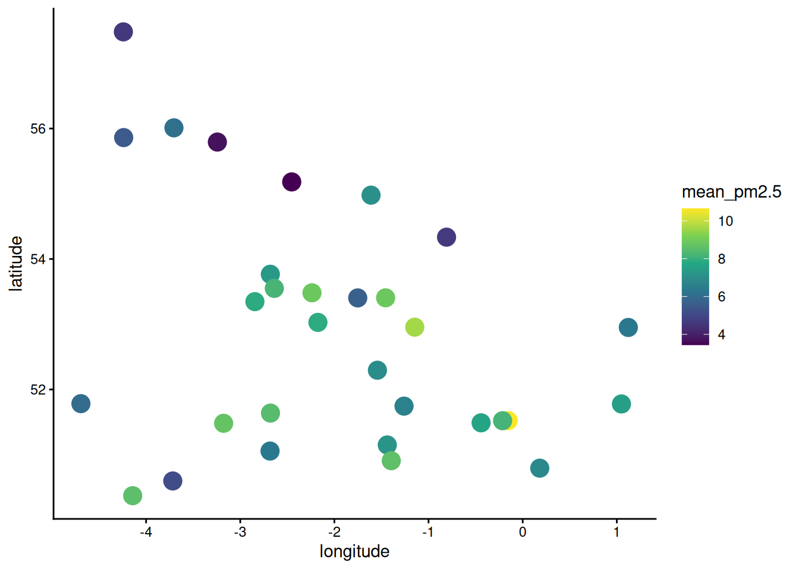
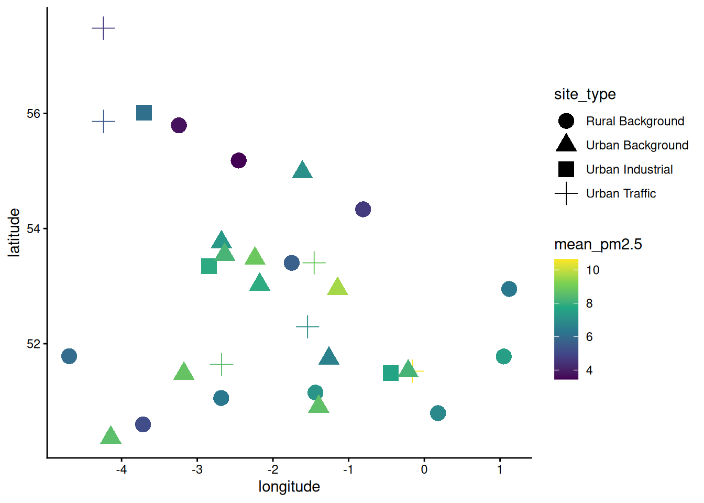
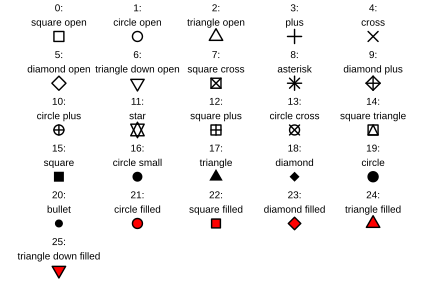
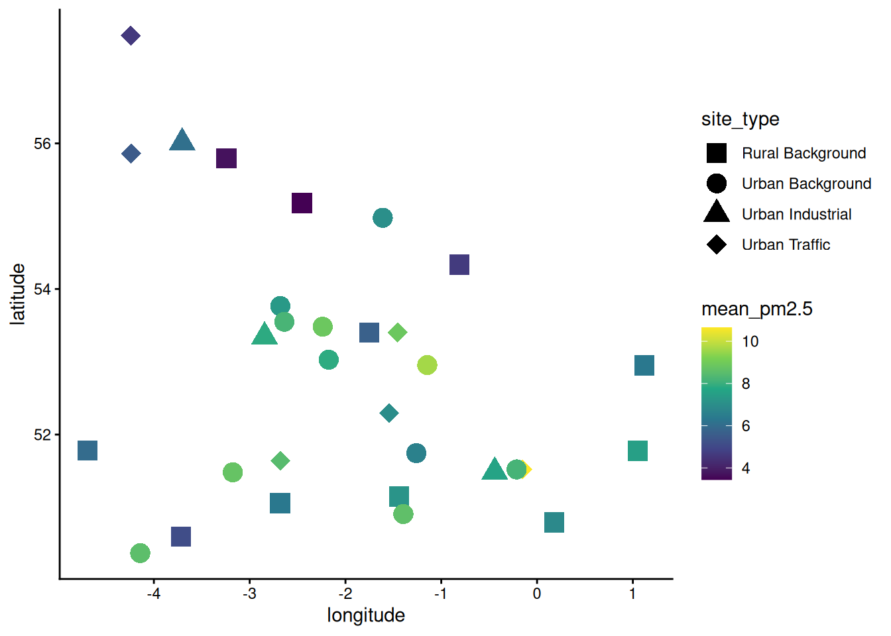
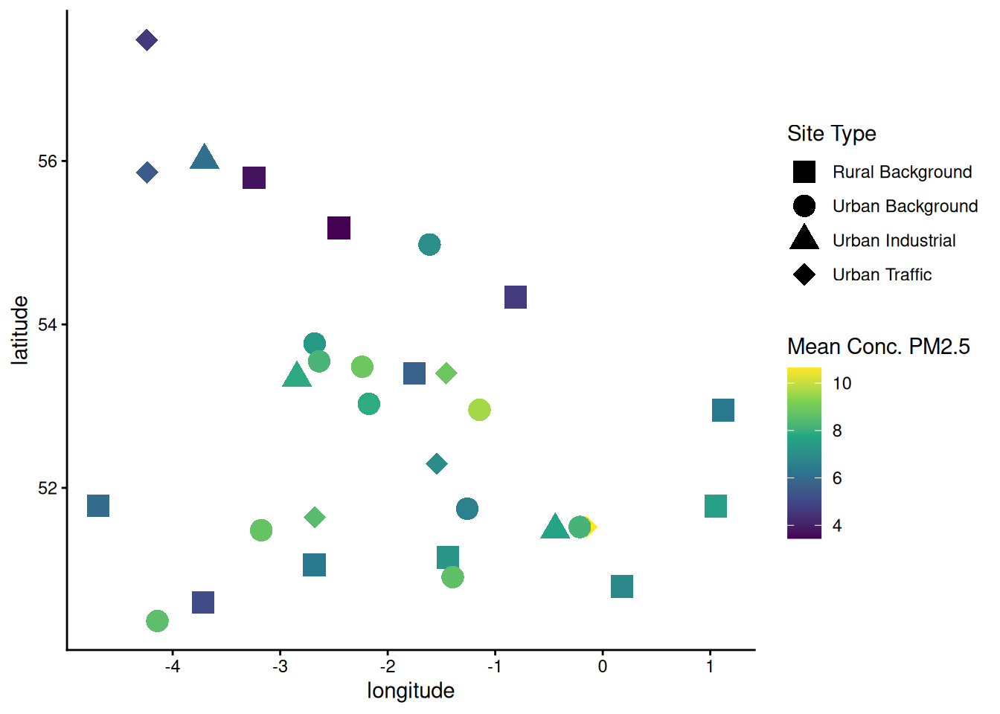

24 Spatial plots of air quality
Hopefully you noticed at the beginning that the metadata file contains the latitude and longitude for each site.
This means we can make a spatial plot of the air quality data!
NOTE: In weeks 7-10, you’ll learn more rigorous methods for making maps in ArcGIS, but for now we’ll simply plot the latitude and longitude as x and y coordinates in a standard scatter plot.
24.1 Summarising the data
In order to make one plot of the data over space, we will probably want to summarise the data from multiple years into a single mean of air quality.
Return to your original facet plots of the individual sites by site type. (You can either rerun the code to generate them again, or navigate to them using the back arrow in the Plots tab.)
Note that some sites only started collecting data quite recently - particularly the rural sites.
Questions:
- Why is it a problem that certain sites only have more recent data, i.e. how might that bias the data?
- How might we be able to compensate for this?
If we took the mean of all data points for each site, the sites with older data would unfairly look like they had worse air quality, because air quality has generally improved over time.
We can mostly compensate for this bias in the data by only using data from the last 5 years, regardless of if earlier data exists or not.
Use the summarise() to calculate the mean concentration of fine particulate matter from 2020-2025 for each site.
Your pipeline should include:
- filtering the data by date
- grouping the data by site
- calculating the mean
24.2 Left joining with the metadata
We need to add the latitude and longitude values for each site to our summarised data frame.
The easiest way to do this in R is with a function called left_join(), which
- takes every row in one data frame (
x) - matches it with a row in another data frame (
y) - based on a column that they have common (
by)
Search for left_join() in the help tab or run the code ?left_join and read the documentation.
Questions:
- How is
left_join()different toright_join()orfull_join()? - Why are we using the former as opposed to one of the latter two?
Use the documentation to write a line of code that uses left_join() to add the location metadata to your summarised air quality data.
24.3 Make the spatial plot
First, use ggplot() to make a basic plot of all of the sites based on their latitude and longitude.

Hmmm. It’s hard to see the shape of the UK in there.
But if we duplicate our figure-making code and add site labels to each point, we can see how it is indeed the UK, just distorted from what we are used to.
To add site labels, you will need to:
- Add “label = var_x” to the the
aes()withinggplot() - Add a
geom_text()layer

A bit ugly, but hopefully you’re convinced that these dots do indeed represent sites around the UK.
Now we’ll go back to the original (text label-free) code and continue working to make it more informative and attractive.
The main thing that we need to do is include the mean fine particulate matter data in our figure somehow.
One of the easiest ways to do that is by increasing the size of the points and making their colour depend on the value of particulate matter.
TIP!
The correct place to add arguments that change attributes of your plot (e.g colour =, and size = for your points) will depend on your goal:
- If you want it to depend on the data values, add it to the
aes()function inggplot(). - If you want it to apply to all points equally, add it directly to
geom_point()

Now we can see there’s differences between the sites, but the default colour scale isn’t great for illustrating it.
There’s a set of ggplot functions that use viridis colour scales that are really nice.
To switch to a viridis colour scale, add a layer with the scale_colour_viridis_c() function. (The small c stands for “continuous” variable that can take any numeric value, as opposed to “d” for a discrete variable that comes in a limited number of categories.)
Type ?scale_colour_viridis_c into your script and run it (or search in the help tab) so you can read the documentation.
TIP!
The option = argument for scale_colour_viridis_c() has 8 different colour scales you can use, shown at the link above.
Try a few of the different colour scales before deciding on the one you like best.

Now we can see the differences in air quality quite nicely.
However, we can’t tell what the site type is.
Add a shape = argument to the appropriate place to make the shape depend on the type of site.

That looks almost really good, but the cross point doesn’t quite fit with the other three shapes, and is much harder to see.
So let’s manually specify the different shape values that we want.
Remember the different number codes from last week:

Let’s use shapes 15, 16, 17 and 18.
To manually control which shapes are used, add a layer with the scale_shape_manual() function and give it the numbers we want as a vector for the values = argument.

One more final change to make a professional quality figure - change formatting of the legend titles (Right now they are literally just the column names.)
Luckily the labs() function doesn’t just handle axis labels and titles, it also is used to manage the labels for pretty much anything on the plot. All you need to provide is the name of the aesthetic argument (e.g. colour) and then set that to a string.
So labs(shape = "Site Type") will set the legend created showing the different shapes to the sensible name “Site Type”.
So let’s do that by adding a labs() call to our ggplot figure:

Voila!
TIP!
When you initially create a ggplot object, it’s not “baked” into a real figure until you print it. As such you can add layers and geoms later before you print and it works just fine! For example:
p <- ggplot(my_df, aes(x = my_col1, y = my_col2))
p <- p + geom_point()
p <- p + labs(x = "Independent", y = "Dependent")
p <- p + theme_classic()
print(p)